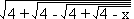

Find the smallest positive integer such that when its last digit is moved to the start of the number (example: 1234 becomes 4123) the resulting number is larger than and is an integral multiple of the original number. Numbers are written in standard decimal notation, with no leading zeroes.
Hint - Answer - Solution
A fair coin is tossed repeatedly until n consecutive heads occur. What is the expected number of times the coin is tossed?
For example, two consecutive heads could be obtained as follows:
... and so on.
Hint - Answer - Solution
Given that 37! = 13763753091226345046315979581abcdefgh0000000, determine, with a minimum of arithmetical effort, the digits a, b, c, d, e, f, g, and h. No calculators or computers allowed!
Hint - Answer - Solution
Does there exist a Fibonacci number whose decimal representation ends in nine nines?
(The Fibonacci numbers are defined by the recurrence equation F1 = 1, F2 = 1, with Fn = Fn-1 + Fn-2, for n > 2.)
Hint - Answer - Solution
A piece of card has the shape of a triangle, ABC, with  BCA a right angle. It is folded once so that:
BCA a right angle. It is folded once so that:
If BC = 115 and AC = 236, find the minimum possible value of the area of  YXC'.
YXC'.
Hint - Answer - Solution
Solve the equation  = x.
(All square roots are to be taken as positive.)
Hint 1 - Hint 2 - Answer - Solution
A perfect square has length n if its last n (decimal) digits are the same and non-zero. What is the maximum possible length? Find all squares that achieve this length.
Hint - Answer - Solution
Does there exist an integral power of 2 such that it is possible to rearrange the digits giving another power of 2? Numbers are written in standard decimal notation, with no leading zeroes.
Hint - Answer - Solution
| Nick Hobson nickh@qbyte.org |